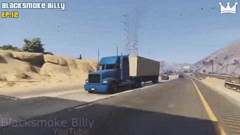

About Me
My name is Alex Brown. I am the youngest out of 5 brothers and 1 sister including me.
I am also a twin. We are identical twins. People get us mixed up a lot including my parents but
I don't understand how they don't see a difference in me and my twin. They say we look alike but I don't see it and never will.
I love to play video games, play with my friends, ride my bike, and stay up late.
Some video games I play include, Fortnite, GtaV, Minecraft, Roblox, and more.
I usually play with my friends when I am on the game and sometimes outside because some of them live near me.
My mongoose is the bike that I ride with. I ride with my two brothers and play basketball with them whenever we go outside.
We ride around our block and sometimes on our neighborhood street.
I am currently 14 years of age and I am going into the 9th grade.
I would like to really get into cybersecurity as my future job, that is why I am in this amazing/outstaing program.

One of my favorite airlines, Southwest.
This is a plane landing at an airport.
This airline has very comfortable seats.
It can be expensive but it is surely worth it!
I have flown on this plane many many times to many different places and I haven't had any bad comments about this airline.
I would surely fly on this airline again.

This is one of my favorite games, Rocket league.
This is literally soccer but you are just using a car and trying to score goals.
Don't let your opposing team score all of the points on you, unless you want to lose.
I have played this game many many times and I loved it!
I haven't played it in a while, but when I did play it was awesome!

This is a very awesome snipe, for the win too!
I love using snipers in Call of Duty.
Call of Duty is my second favorite game out of these gifs.
I have been playing this game for a while.
I've played it with my friends, my brothers, and many more people that I have found off of school or Call of Duty.
I use many different guns on Call of Duty but I mostly use the sniper when it is a sniper map.
I was actually planning on playing Call of Duty today.

This is my all time favorite game, GtaV.
This is also a very awesome trickshot, I have never seen somene do this before.
I have actually tried to recreate this trickshot but you know how it ended.
It obviously didn't work.
I am lucky to have found this as a gif.